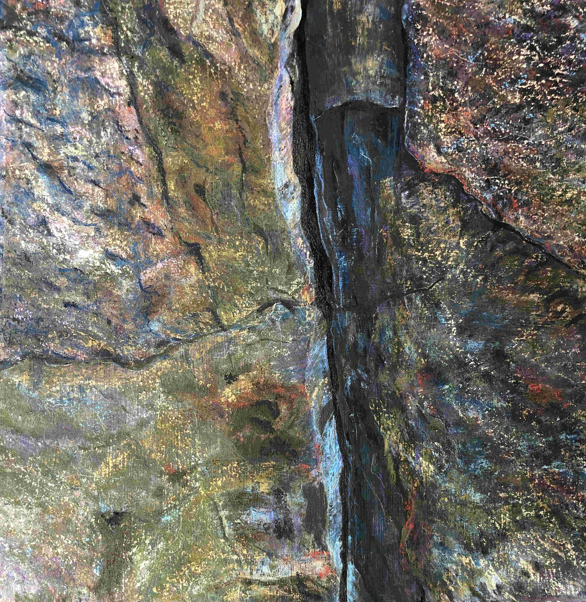

The magnitude of the moment lives on when put into Art.
I have been drawn to art from early childhood as a way to express the awe, wonder and emotional context
in our world. I love all mediums. I appreciate all styles and revel in the works of many past and current artists.
Photo Credit:
My picture was taken by a kind security guard at a MFA who could tell I was really enjoying the massively large-scale
art by German painter Katharina Grosse
on special exhibit.
Another wonderful large art exhibit can be found at
Mass MOCA Sol Lewitt.

Featured Painting: A Climber's Hold:
I painted this pastel from a Pawtuckaway, NH personal photo. The painting has been published in
Apero Fine Arts On-line Magazine January 2020 edition. Visit my Blog page to hear about its painting process.
About Me
Mathematics, Computer Science and Art:
Yes they do go hand-in-hand. All follow rules, all are creative! I have oscillated
between art and science since my grade school. I have always loved Math. My father and I
would sit at the kitchen table and solve word problems for the fun of it. I loved to draw
in my teen years, especially portraits. I received my Bachelor's of Science majoring in Computational
Mathematics back in the day of FORTRAN and Assembly language programming. I also pursued my art in college
by taking drawing and two courses in photography.
Discovering Watercolors and Acrylics:
While working in Software Engineering, I pursued my art at night taking several years of weekly
Watercolor classes with a local watercolorist,
Angelina Wood (1930-2003)
.
I continued watercolor painting as I home schooled my children, taking a hiatus from Software Engineering.
I also took an
Acrylic painting class
.
Art School and Oil Painting
Once my children were integrated into public school, I went back to pursue my BFA focussing on Painting. There I had classes
in Design, Watercolor, Oil Painting and Art History. I put the completion of my degree on hold in order to return to engineering to put my children
through college. During that time, I had a room exhibition
at the Medfield Plesh Park Street Art Gallery.
Oils and Pastels:
While engineering consumed most of my time for the next decade, I returned to oil painting as a weekend painter two years ago. Last year, I began
experimenting with soft pastels. I love its spontaneity, layering, range of application including pan pastels, pencils, and a range of pastel crayons.
I have since retired from engineering and am working full-time in art, painting in all mediums. I am very excited to be able to pursue my passion!
Upcoming Events
 See Photo Credit
See Photo Credit